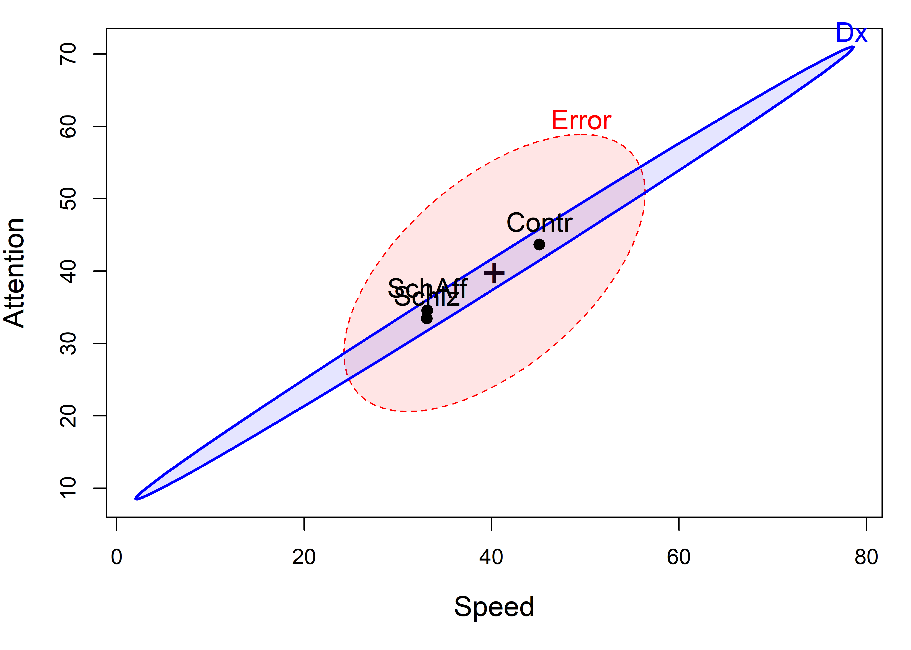
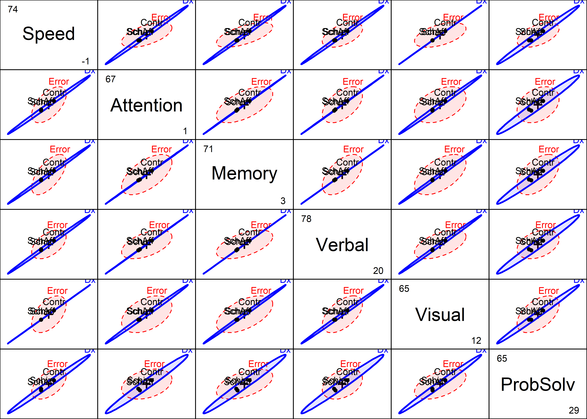
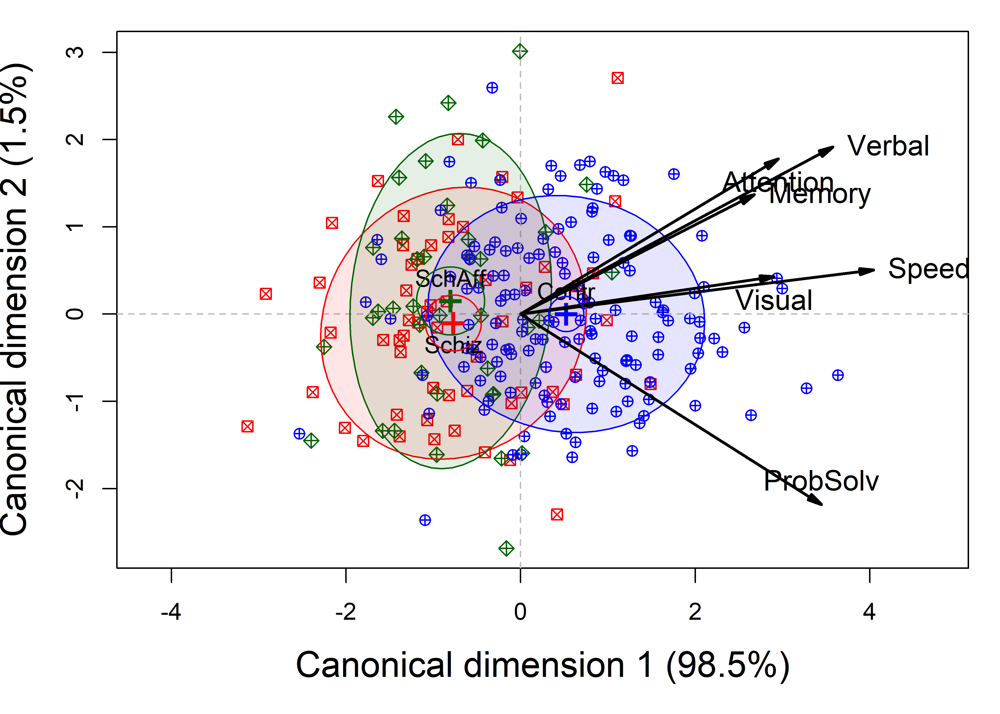
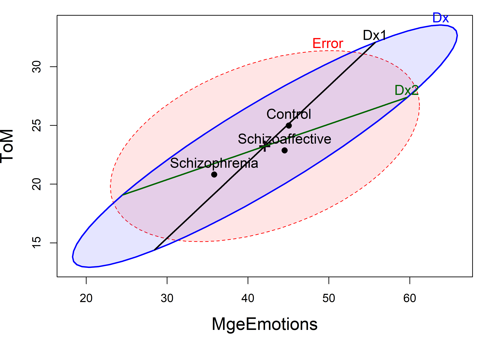
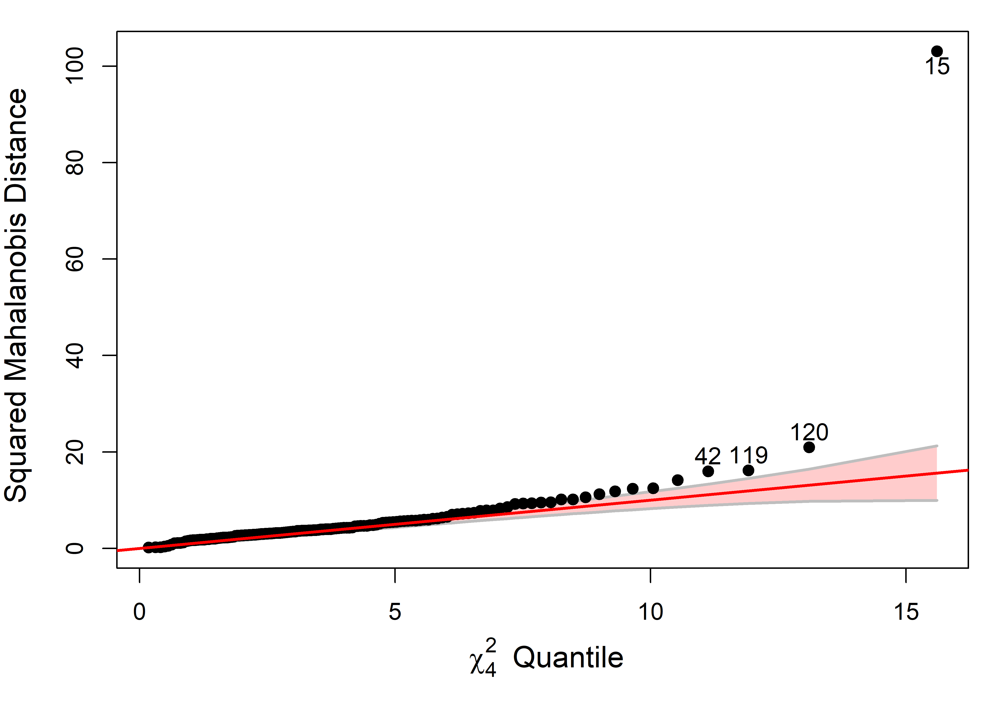
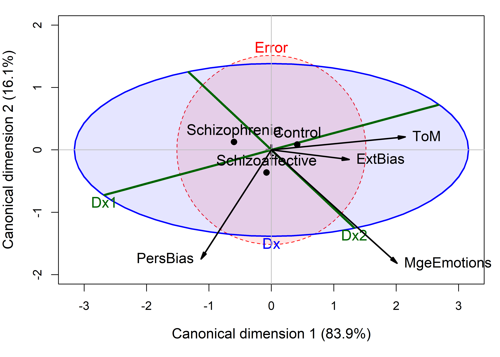

11 Case studies
This chapter presents some complete analyses of datasets that will be prominent in the book. Some of this material may later be moved to earlier chapters.
Packages
In this chapter we use the following packages. Load them now
11.2 Fitting the MLM
We proceed to fit the one-way MANOVA model.
NC.mlm <- lm(cbind(Speed, Attention, Memory, Verbal, Visual, ProbSolv) ~ Dx,
data=NeuroCog)
Anova(NC.mlm)
#>
#> Type II MANOVA Tests: Pillai test statistic
#> Df test stat approx F num Df den Df Pr(>F)
#> Dx 2 0.299 6.89 12 470 1.6e-11 ***
#> ---
#> Signif. codes: 0 '***' 0.001 '**' 0.01 '*' 0.05 '.' 0.1 ' ' 1The first research question is captured by the contrasts for the Dx factor shown above. We can test these with car::linearHypothesis(). The contrast Dx1 for control vs. the diagnosed groups is highly significant,
# control vs. patients
print(linearHypothesis(NC.mlm, "Dx1"), SSP=FALSE)
#>
#> Multivariate Tests:
#> Df test stat approx F num Df den Df Pr(>F)
#> Pillai 1 0.289 15.9 6 234 2.8e-15 ***
#> Wilks 1 0.711 15.9 6 234 2.8e-15 ***
#> Hotelling-Lawley 1 0.407 15.9 6 234 2.8e-15 ***
#> Roy 1 0.407 15.9 6 234 2.8e-15 ***
#> ---
#> Signif. codes: 0 '***' 0.001 '**' 0.01 '*' 0.05 '.' 0.1 ' ' 1but the second contrast, Dx2, comparing the schizophrenic and schizoaffective group, is not.
# Schizo vs SchizAff
print(linearHypothesis(NC.mlm, "Dx2"), SSP=FALSE)
#>
#> Multivariate Tests:
#> Df test stat approx F num Df den Df Pr(>F)
#> Pillai 1 0.006 0.249 6 234 0.96
#> Wilks 1 0.994 0.249 6 234 0.96
#> Hotelling-Lawley 1 0.006 0.249 6 234 0.96
#> Roy 1 0.006 0.249 6 234 0.9611.2.1 HE plot
So the question becomes: how to understand these results.heplot() shows the visualization of the multivariate model in the space of two response variables (the first two by default). The result (Figure 11.4) tells a very simple story: The control group performs higher on higher measures than the diagnosed groups, which do not differ between themselves.
(For technical reasons, to abbreviate the group labels in the plot, we need to update() the MLM model after the labels are reassigned.)
op <- par(mar=c(5,4,1,1)+.1)
heplot(NC.mlm,
fill=TRUE, fill.alpha=0.1,
cex.lab=1.3, cex=1.25)
par(op)
NeuroCog data. The labeled points show the means of the groups on the two variables. The blue H ellipse for groups indicates the strong positive correlation of the group means.This pattern is consistent across all of the response variables, as we see from a plot of pairs(NC.mlm):
pairs(NC.mlm,
fill=TRUE, fill.alpha=0.1,
var.cex=2)
NeuroCog data.11.2.2 Canonical space
We can gain further insight, and a simplified plot showing all the response variables by projecting the MANOVA into the canonical space, which is entirely 2-dimensional (because \(df_h=2\)). However, the output from candisc() shows that 98.5% of the mean differences among groups can be accounted for in one canonical dimension. ::: {.cell layout-align=“center”}
NC.can <- candisc(NC.mlm)
NC.can
#>
#> Canonical Discriminant Analysis for Dx:
#>
#> CanRsq Eigenvalue Difference Percent Cumulative
#> 1 0.29295 0.41433 0.408 98.5 98.5
#> 2 0.00625 0.00629 0.408 1.5 100.0
#>
#> Test of H0: The canonical correlations in the
#> current row and all that follow are zero
#>
#> LR test stat approx F numDF denDF Pr(> F)
#> 1 0.703 7.53 12 468 9e-13 ***
#> 2 0.994 0.30 5 235 0.91
#> ---
#> Signif. codes: 0 '***' 0.001 '**' 0.01 '*' 0.05 '.' 0.1 ' ' 1:::
Figure 11.6 is the result of the plot() method for class "candisc" objects, that is, the result of calling plot(NC.can, ...). It plots the two canonical scores, \(\mathbf{Z}_{n \times 2}\) for the subjects, together with data ellipses for each of the three groups.
pos <- c(4, 1, 4, 4, 1, 3)
col <- c("red", "darkgreen", "blue")
op <- par(mar=c(5,4,1,1)+.1)
plot(NC.can,
ellipse=TRUE,
rev.axes=c(TRUE,FALSE),
pch=c(7,9,10),
var.cex=1.2, cex.lab=1.5, var.lwd=2, scale=4.5,
col=col,
var.col="black", var.pos=pos,
prefix="Canonical dimension ")
par(op)
NeuroCog data MANOVA. Scores on the two canonical dimensions are plotted, together with 68% data ellipses for each group.The interpretation of Figure 11.6 is again fairly straightforward. As noted earlier (REF???), the projections of the variable vectors in this plot on the coordinate axes are proportional to the correlations of the responses with the canonical scores. From this, we see that the normal group differs from the two patient groups, having higher scores on all the neurocognitive variables, most of which are highyl correlated. The problem solving measure is slightly different, and this, compared to the cluster of memory, verbal and attention, is what distinguishes the schizophrenic group from the schizoaffectives.
The separation of the groups is essentially one-dimensional, with the control group higher on all measures. Moreover, the variables processing speed and visual memory are the purest measures of this dimension, but all variables contribute positively. The second canonical dimension accounts for only 1.5% of group mean differences and is non-significant (by a likelihood ratio test). Yet, if we were to interpret it, we would note that the schizophrenia group is slightly higher on this dimension, scoring better in problem solving and slightly worse on working memory, attention, and verbal learning tasks.
Summary
This analysis gives a very simple description of the data, in relation to the research questions posed earlier:
On the basis of these neurocognitive tests, the schizophrenic and schizoaffective groups do not differ significantly overall, but these groups differ greatly from the normal controls.
All cognitive domains distinguish the groups in the same direction, with the greatest differences shown for the variables most closely aligned with the horizontal axis in Figure 11.6.
References
Actually, multivariate normality of the predictors in \(\mathbf{X}\) is not required in the MLM. This assumption applies only to the conditional values \(\mathbf{Y} \;|\; \mathbf{X}\), i.e., that the errors \(\mathbf{u}_{i}' \sim \mathcal{N}_{p}(\mathbf{0},\boldsymbol{\Sigma})\) with constant covariance matrix. Moreover, the widely used MVN test statistics, such as Mardia’s (1970) test based on multivariate skewness and kurtosis are known to be quite sensitive to mild departures in kurtosis (Mardia, 1974) which do not threaten the validity of the multivariate tests.↩︎
The direct application of significance tests to canonical scores probably requires some adjustment because these are computed to have the optimal between-group discrimination.↩︎
11.3 Social cognitive measures
The social cognitive measures were designed to tap various aspects of the perception and cognitive processing of emotions of others. Emotion perception was assessed using a Managing Emotions score from the MCCB. A “theory of mind” (
ToM) score assessed ability to read the emotions of others from photographs of the eye region of male and female faces. Two other measures, externalizing bias (ExtBias) and personalizing bias (PersBias) were calculated from a scale measuring the degree to which individuals attribute internal, personal or situational causal attributions to positive and negative social events.The analysis of the
SocialCogdata proceeds in a similar way: first we fit the MANOVA model, then test the overall differences among groups usingAnova(). We find that the overall multivariate test is again significant,Testing the same two contrasts using
linearHypothesis()(results not shown), w e find that the overall multivariate test is again significant, but now both contrasts are significant (Dx1: \(F(4, 133)=5.21, p < 0.001\); Dx2: \(F(4, 133)=2.49, p = 0.0461\)), the test forDx2just barely.These results are important, because, if they are reliable and make sense substantively, they imply that patients with schizophrenia and schizoaffective diagnoses can be distinguished by their performance on tasks assessing social perception and cognition. This was potentially a new finding in the literature on schizophrenia.
As we did above, it is useful to visualize the nature of these differences among groups with HE plots for the
SC.mlmmodel. Each contrast has a corresponding \(\mathbf{H}\) ellipse, which we can show in the plot using thehypothesesargument. With a single degree of freedom, these degenerate ellipses plot as lines.
SocialCogdata. The labeled points show the means of the groups on the two variables. The lines for Dx1 and Dx2 show the tests of the contrasts among groups.It can be seen that the three group means are approximately equally spaced on the
ToMmeasure, whereas forMgeEmotions, the control and schizoaffective groups are quite similar, and both are higher than the schizophrenic group. This ordering of the three groups was somewhat similar for the other responses, as we could see in apairs(SC.mlm)plot.11.3.1 Model checking
Normally, we would continue this analysis, and consider other HE and canonical discriminant plots to further interpret the results, in particular the relations of the cognitive measures to group differences, or perhaps an analysis of the relationships between the neuro- and social-cognitive measures. We don’t pursue this here for reasons of length, but this example actually has a more important lesson to demonstrate.
Before beginning the MANOVA analyses, extensive data screening was done by the client using SPSS, in which all the response and predictor variables were checked for univariate normality and multivariate normality (MVN) for both sets. This traditional approach yielded a huge amount of tabular output and no graphs, and did not indicate any major violation of assumptions.1
A simple visual test of MVN and the possible presence of multivariate outliers is related to the theory of the data ellipse: Under MVN, the squared Mahalanobis distances \(D^2_M (\mathbf{y}) = (\mathbf{y} - \bar{\mathbf{y}})' \, \mathbf{S}^{-1} \, (\mathbf{y} - \bar{\mathbf{y}})\) should follow a \(\chi^2_p\) distribution. Thus, a quantile-quantile plot of the ordered \(D^2_M\) values vs. corresponding quantiles of the \(\chi^2\) distribution should approximate a straight line (Cox, 1968; Healy, 1968). Note that this should be applied to the residuals from the model –
residuals(SC.mlm)– and not to the response variables directly.heplots::cqplot()implements this for"mlm"objects Calling this function for the modelSC.mlmproduces Figure 11.8. It is immediately apparent that there is one extreme multivariate outlier; three other points are identified, but the remaining observations are nearly within the 95% confidence envelope (using a robust MVE estimate of \(\mathbf{S}\)).
SC.mlm. The confidence band gives a point-wise 95% envelope, providing information about uncertainty. One extreme multivariate outlier is highlighted.Further checking revealed that this was a data entry error where one case (15) in the schizophrenia group had a score of -33 recorded on the
ExtBiasmeasure, whose valid range was (-10, +10). In R, it is very easy to re-fit a model to a subset of observations (rather than modifying the dataset itself) usingupdate(). The result of the overall Anova and the test ofDx1were unchanged; however, the multivariate test for the most interesting contrastDx2comparing the schizophrenia and schizoaffective groups became non-significant at the \(\alpha=0.05\) level (\(F(4, 133)=2.18, p = 0.0742\)).11.3.2 Canonical HE plot
This outcome creates a bit of a quandry for further analysis (do univariate follow-up tests? try a robust model?) and reporting (what to claim about the
Dx2contrast?) that we don’t explore here. Rather, we proceed to attempt to interpret the MLM with the aid of canonical analysis and a canonical HE plot. The canonical analysis of the modelSC.mlm1now shows that both canonical dimensions are significant, and account for 83.9% and 16.1% of between group mean differences respectively.
SocialCogMANOVA. The variable vectors show the correlations of the responses with the canonical variables. The embedded green lines show the projections of the H ellipses for the contrastsDx1andDx2in canonical space.The HE plot version of this canonical plot is shown in Figure 11.9. Because the
heplot()method for a"candisc"object refits the original model to the \(\mathbf{Z}\) canonical scores, it is easy to also project other linear hypotheses into this space. Note that in this view, both theDx1andDx2contrasts project outside \(\mathbf{E}\) ellipse.2.This canonical HE plot has a very simple description: